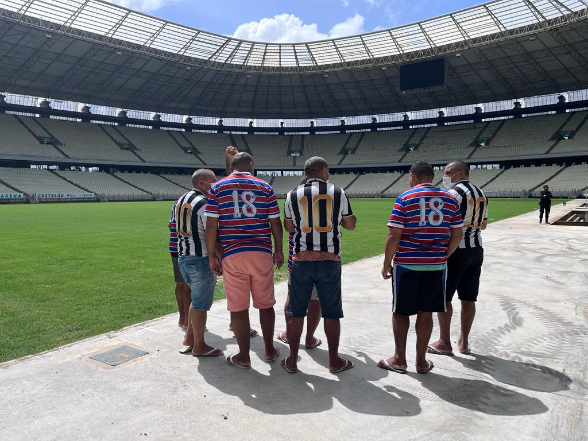

Students from the municipality of Russas, on a guided tour at the Arena Multiuso Castelão..

Football Memorial, Arna Castelão - Fortaleza

visit of the inmates of the Instituto Psiquiátrico Governador Stênio Gomes

Guided tour of the Castelão Arena
The Arena Castelão receives visits from Monday to Friday by prior arrangement via the phone or email below. A fee of R$ 20.00 is charged for the visit. Half price is granted to children up to 12 years old, students and seniors over 60 years old, upon presentation of a document.
Days: Monday to Friday
Hours: Morning: 9 am, 10 am and 11 am. Afternoon: 2pm, 3pm and 4pm
Telephone: (85) 3304-4501
E-mail: visitaguiada@arenacastelao.com
Fee: BRL 20.00 (whole) and BRL 10.00 (half)